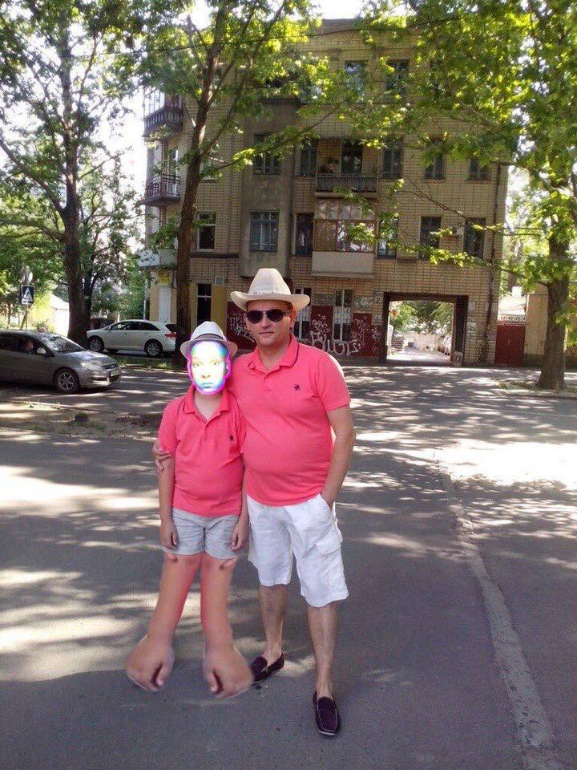

В глубине Николаевской области, в тени аварии, произошедшей несколько десятилетий назад, живет мальчик по имени Марк. Его история поражает воображение и вызывает жгучую боль в сердцах тех, кто о ней узнает. Марк родился с уникальными мутациями, последствиями катастрофы, которая когда-то потрясла его родной край.
С момента своего рождения Марк борется с рядом физических и психологических проблем. Вопреки всему, он обладает невероятной волей к жизни и стремлением жить полноценной жизнью. Его улыбка, несмотря на видимые следы мутаций на лице, вдохновляет всех, кто его знает.
История Марка - это не только рассказ о борьбе и выживании. Это крик о помощи для всех, кто пострадал от последствий аварии в Николаевской области. С каждым днем его жизнь становится все более тяжелой, поскольку медицинское обслуживание и необходимая помощь остаются недоступными для многих жителей этого региона.
Несмотря на все трудности, Марк продолжает улыбаться и мечтать. Его мечты о будущем, в котором он может свободно бегать, играть с друзьями и жить без боли, поддерживают его дух. Он стал символом несгибаемости духа и воли к жизни среди всех, кто столкнулся с последствиями трагедии.
Мы должны не забывать об Марке и многих других, чьи жизни были изменены аварией в Николаевской области. Их борьба за справедливость и лучшее будущее заслуживает нашего внимания и поддержки. Помните об этом, когда смотрите на звезды - ведь среди них, возможно, искрится надежда и для Марка.
